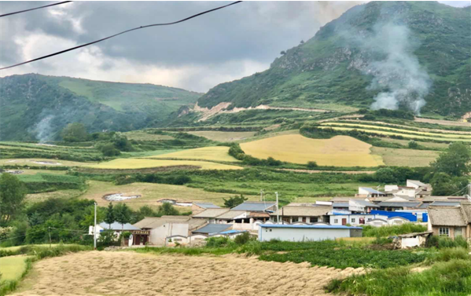
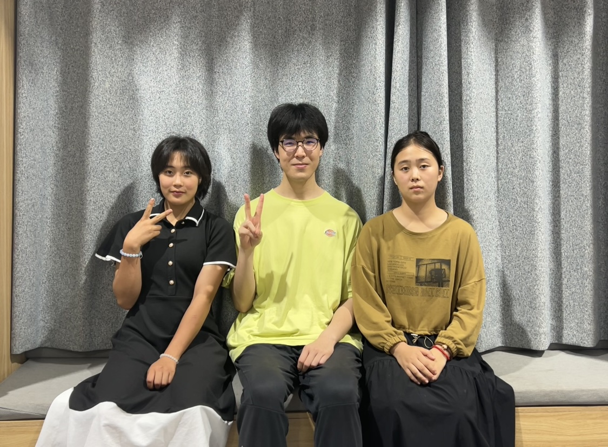

Gansu Field Research Program
Last summer, I conducted a one-week field research in Nuanshui village, Gansu Province, China. There, I interviewed several villagers about their living conditions and the environmental pollution problem. Finally, I co-authored and published an investigative article about how fertilizer usage might potentially do harm to the local environment. I also created an online encyclopedia entry for the village to gain it more public attention.
Dream Home Teaching Program
This year, I spent four months teaching students from an underprivileged area in Northwestern China. Some of them were about my age, and we were more like friends instead of teacher and students. This was indeed an unforgettable experience.
